Historia
Ídolos
Scudetto
Contacto
Rivalidades
Historia
Ídolos
Scudetto
Contacto
Rivalidades
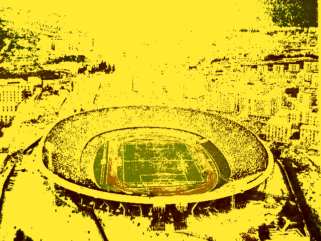
Estadio en los noventa
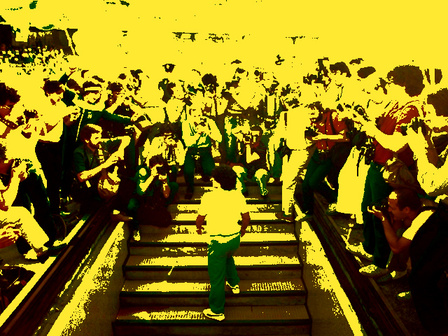
Presentación de Maradona
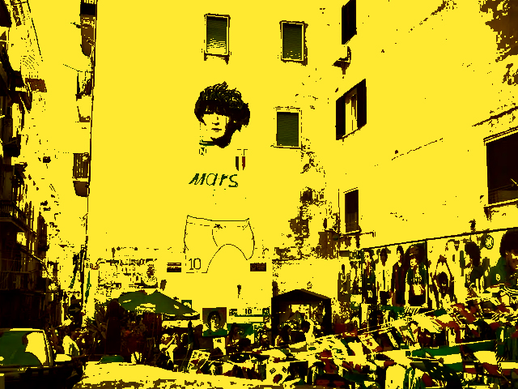
Murales de Nápoles
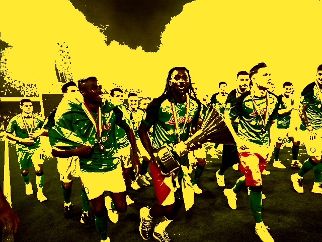
Scudetto
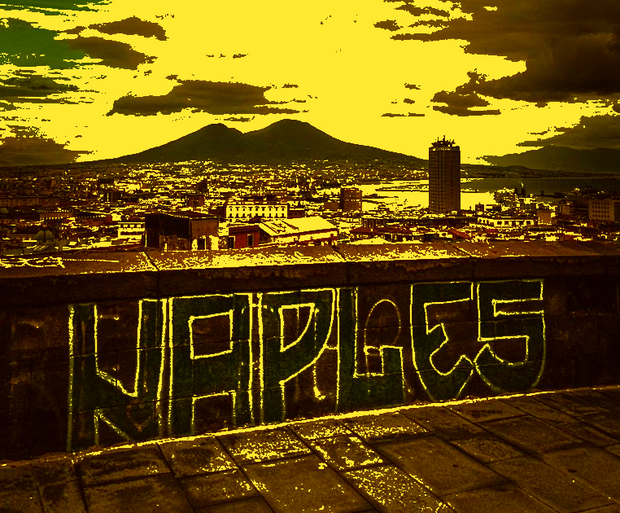
Ciudad
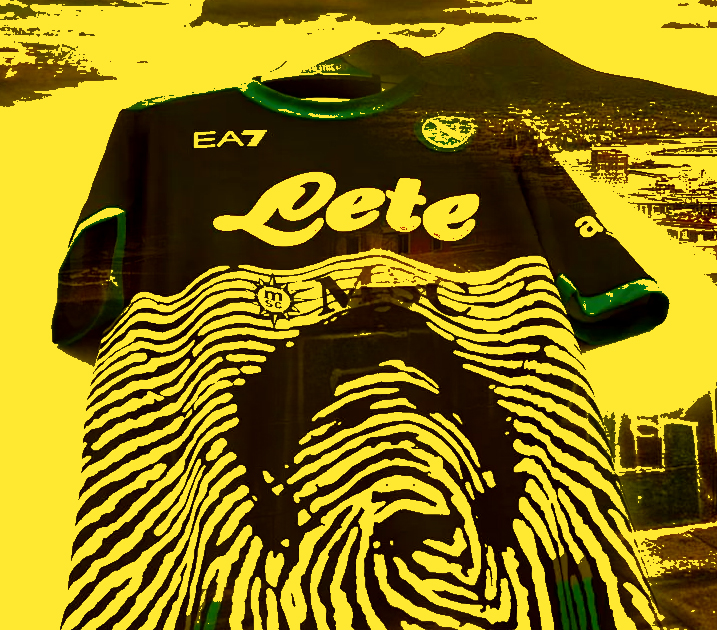
Camiseta especial
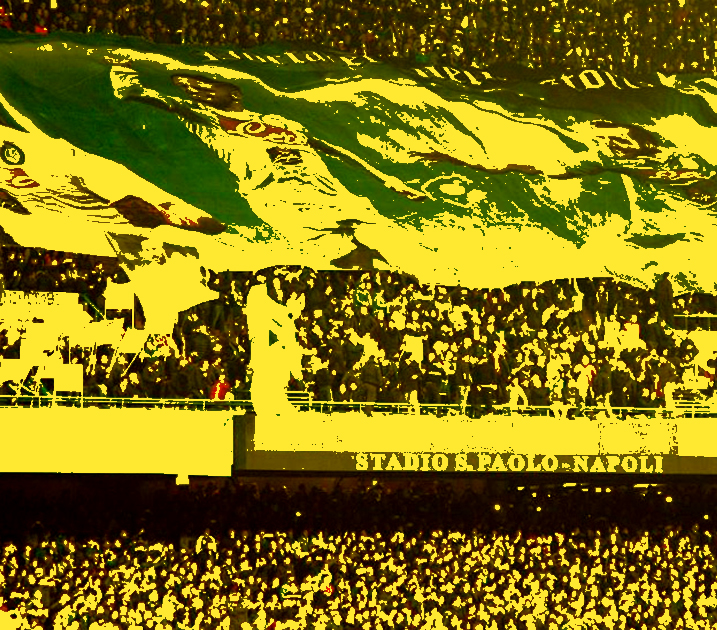
Afición
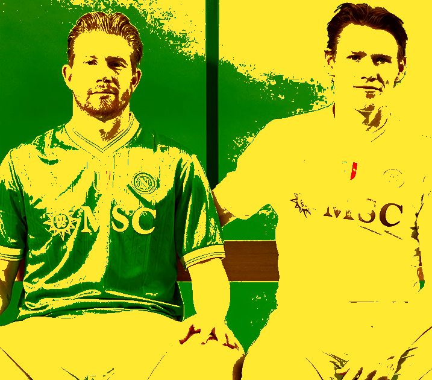
Napoli actual
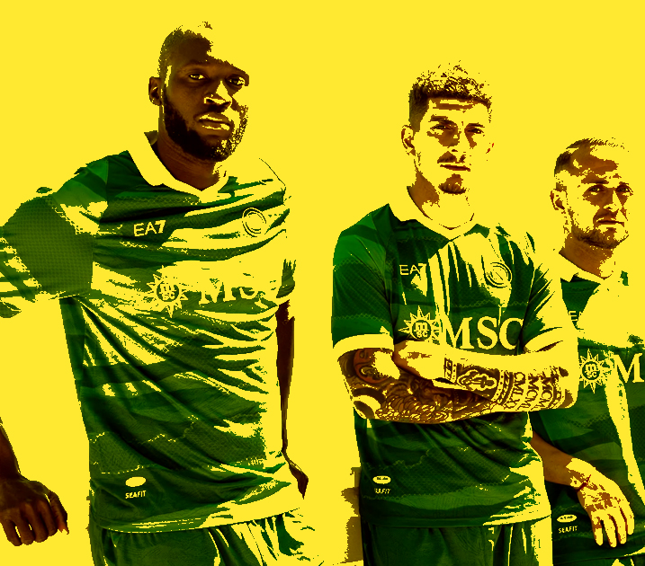
Temporada pasada
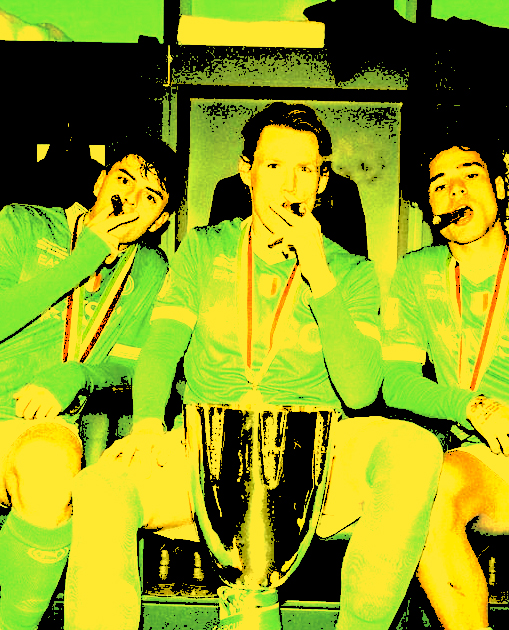
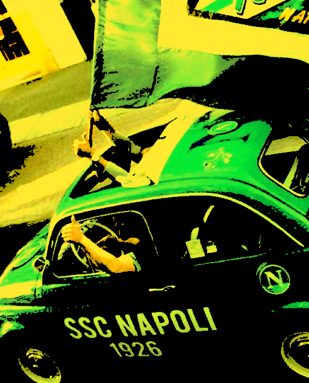
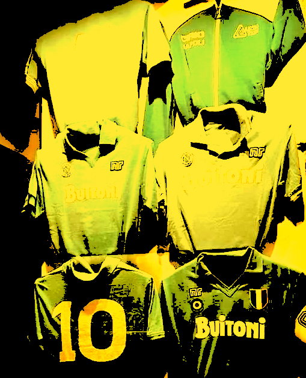
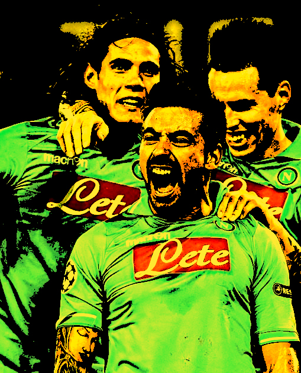
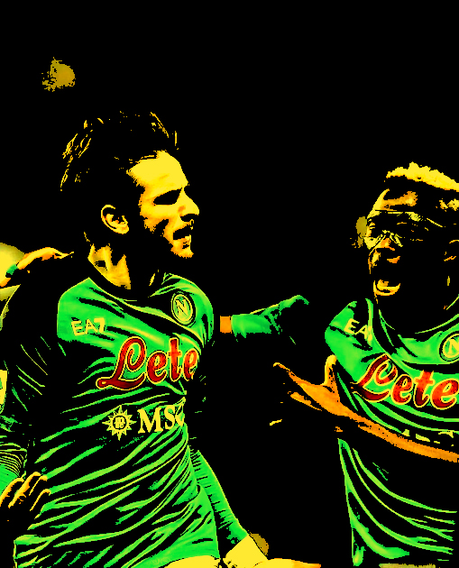
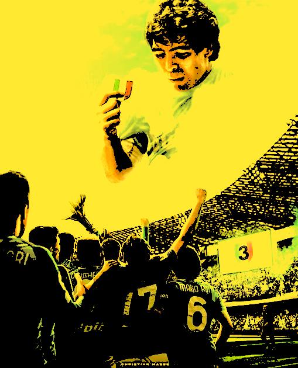
El SSC Napoli es mucho más que un club de fútbol: es el corazón deportivo y cultural de la ciudad de Nápoles, en el sur de Italia. Fundado en 1926, Napoli representa la pasión, el orgullo y la identidad de su gente, convirtiéndose en uno de los equipos más queridos y reconocidos del fútbol europeo. A lo largo de su historia, el club ha vivido momentos inolvidables, especialmente durante la era de Diego Armando Maradona, considerado el mayor ídolo de la institución. Con él, Napoli alcanzó la gloria máxima al conquistar sus primeras ligas italianas y consolidarse como una potencia internacional. El equipo disputa sus partidos como local en el imponente Estadio Diego Armando Maradona, donde miles de hinchas crean una atmósfera única, cargada de emoción y fidelidad. Su clásico color celeste simboliza la conexión con el mar y el espíritu vibrante de la ciudad. Hoy en día, Napoli continúa escribiendo su historia con un estilo de juego dinámico y ofensivo, compitiendo al más alto nivel en Italia y Europa. Más que un club, Napoli es una forma de sentir el fútbol: intensa, apasionada e inolvidable.
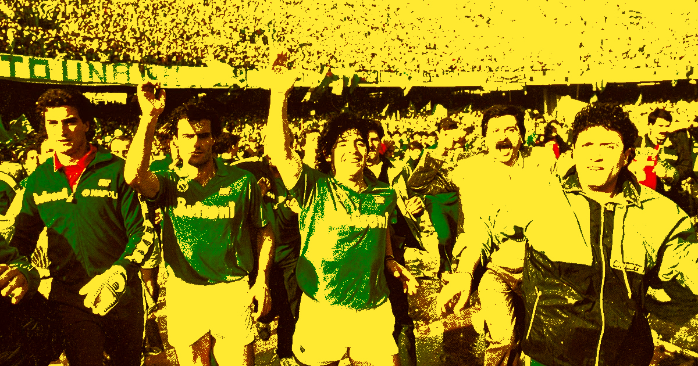
El SSC Napoli es un club de fútbol italiano fundado el 1 de agosto de 1926 en la ciudad de Nápoles. Desde sus inicios, representó el orgullo del sur de Italia y fue creciendo hasta convertirse en uno de los equipos más importantes del país. Durante las décadas de 1970 y 1980, el club comenzó a consolidarse entre los mejores equipos italianos. Su etapa más exitosa llegó con la incorporación de Diego Armando Maradona en 1984. Gracias a su liderazgo, el Napoli conquistó sus dos primeros títulos de la Serie A en las temporadas 1986-87 y 1989-90, además de ganar la Copa de la UEFA en 1989, uno de los mayores logros de su historia. Tras la salida de Maradona, el club atravesó años difíciles, incluyendo problemas económicos y un descenso de categoría. Sin embargo, logró recuperarse y regresar a la máxima división del fútbol italiano. En el siglo XXI volvió a competir al más alto nivel, participando regularmente en torneos europeos. En los últimos años, el Napoli ha vivido una nueva etapa de éxito, destacándose por su estilo de juego ofensivo y por la calidad de sus futbolistas. El club ganó la Serie A 2022-23, poniendo fin a una espera de más de 30 años por un campeonato de liga, y volvió a coronarse campeón en la temporada 2024-25. Hoy en día, el Napoli es uno de los equipos más reconocidos y populares de Italia, con una afición apasionada y una rica historia deportiva.
La llegada de Diego Armando Maradona al Napoli en 1984 marcó un antes y un después en la historia del club. Proveniente del Barcelona, fue recibido por miles de hinchas en el estadio San Paolo, que veían en él la esperanza de competir contra los grandes equipos del norte de Italia. Durante su paso por el club, entre 1984 y 1991, Maradona llevó al Napoli a la etapa más gloriosa de su historia. Bajo su liderazgo, el equipo conquistó sus primeros dos títulos de la Serie A en las temporadas 1986-87 y 1989-90. Además, ganó la Copa Italia, la Supercopa de Italia y la Copa UEFA de 1989, el primer título internacional del club. Más allá de los trofeos, Maradona se convirtió en un símbolo para la ciudad de Nápoles. Su talento, liderazgo y carisma hicieron que los hinchas lo consideraran un héroe y una figura casi legendaria. Gracias a él, el Napoli pasó de ser un equipo con pocas conquistas a convertirse en una potencia del fútbol italiano y europeo. Hasta el día de hoy, Maradona es el máximo ídolo de la institución. Su legado sigue presente en la ciudad, en los murales, en la afición y en el estadio del club, que actualmente lleva el nombre de Stadio Diego Armando Maradona en su honor.
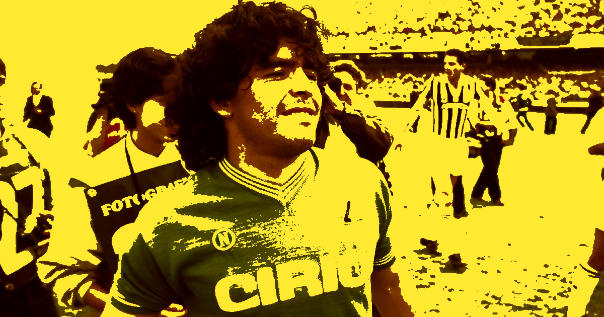
La temporada 1986-87 representa uno de los momentos más importantes en la historia del SSC Napoli. Después de muchos años compitiendo en el fútbol italiano sin poder alcanzar el campeonato, el equipo logró conquistar su primer Scudetto, convirtiéndose en el campeón de la Serie A por primera vez desde su fundación en 1926. Bajo el liderazgo de Diego Armando Maradona, el Napoli desarrolló una campaña excepcional, caracterizada por un juego ofensivo, sólido y competitivo. Maradona fue la gran figura del equipo, aportando goles, asistencias y una enorme capacidad de liderazgo dentro y fuera del campo. Junto a jugadores como Careca, Bruno Giordano y Ciro Ferrara, formó un plantel que quedó para siempre en la memoria de los aficionados. El título se confirmó el 10 de mayo de 1987, tras empatar 1-1 contra la Fiorentina en el estadio San Paolo. Con ese resultado, el Napoli aseguró matemáticamente el campeonato y desató una celebración histórica en toda la ciudad de Nápoles. Miles de personas salieron a las calles con banderas, camisetas y fuegos artificiales para festejar un logro que parecía imposible años atrás. La conquista tuvo un significado especial porque rompió con el dominio de los clubes más poderosos del norte de Italia, como Juventus, Milan e Inter. Para muchos napolitanos, el campeonato simbolizó el orgullo y la identidad de una ciudad que durante mucho tiempo había sido subestimada dentro del país. Como si el Scudetto no fuera suficiente, el Napoli también ganó la Copa Italia esa misma temporada, logrando un histórico doblete. Este éxito marcó el inicio de la etapa más gloriosa del club y sentó las bases para futuros títulos. Más de tres décadas después, el primer Scudetto sigue siendo recordado como uno de los acontecimientos deportivos más importantes en la historia de Nápoles y como la confirmación definitiva de la grandeza de Maradona y de aquel inolvidable equipo.
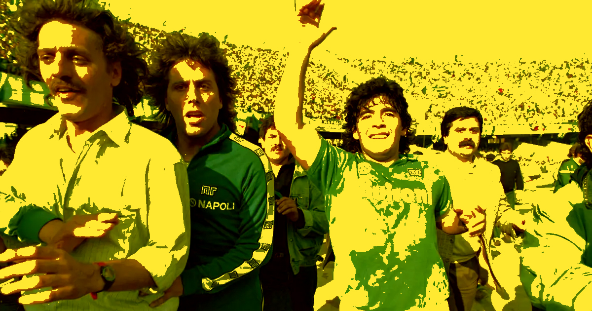
El Napoli Femenino es la sección de fútbol femenino vinculada al Napoli y representa a la ciudad de Nápoles en las principales competiciones del fútbol femenino italiano. A lo largo de los años, el equipo ha trabajado para consolidarse dentro de una disciplina que ha crecido de manera notable en Italia, tanto en popularidad como en nivel competitivo. El club ha participado en distintas categorías del fútbol italiano, logrando ascensos importantes y compitiendo en la Serie A Femenina, la máxima división del país. Su objetivo principal es desarrollar el talento de las futbolistas italianas y ofrecer oportunidades a jóvenes jugadoras para crecer profesionalmente dentro del deporte. Además de los resultados deportivos, el Napoli Femenino desempeña un papel fundamental en la promoción del fútbol femenino en la región de Campania. A través de sus divisiones juveniles y programas de formación, busca fomentar la participación de niñas y adolescentes en el fútbol, contribuyendo al crecimiento de este deporte en el sur de Italia. En los últimos años, el fútbol femenino ha experimentado un importante desarrollo en Italia, y el Napoli Femenino forma parte de este proceso. Con una afición cada vez más numerosa y una estructura en constante crecimiento, el club continúa trabajando para competir al más alto nivel y representar con orgullo los colores de Nápoles.
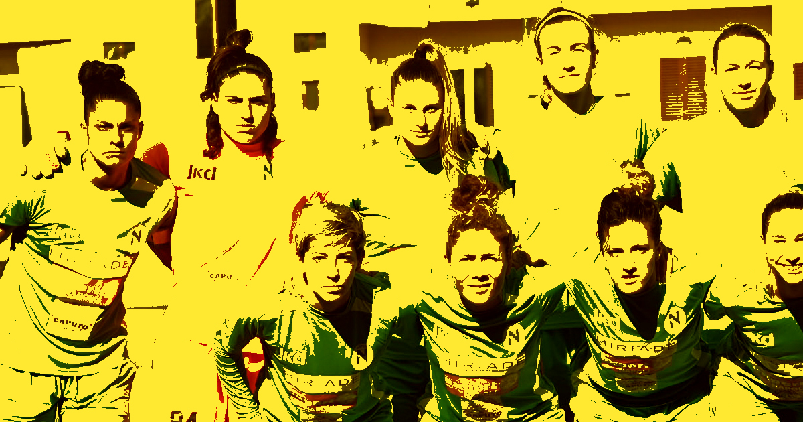
El SSC Napoli es mucho más que un club de fútbol; representa la pasión, la identidad y el orgullo de la ciudad de Nápoles. A lo largo de su historia, ha atravesado momentos de gloria y dificultades, pero siempre ha mantenido una fuerte conexión con sus aficionados. La llegada de Diego Armando Maradona marcó el período más emblemático de la institución, llevando al equipo a conquistar sus primeros títulos de liga y a convertirse en una referencia del fútbol mundial. Sin embargo, la grandeza del Napoli no se limita a una sola época, ya que el club ha sabido reinventarse y volver a competir al más alto nivel, obteniendo nuevos éxitos en el siglo XXI. Hoy en día, el Napoli continúa siendo uno de los equipos más importantes de Italia y Europa, destacándose por su historia, su tradición y el apoyo incondicional de su hinchada. Su legado demuestra que, con esfuerzo, perseverancia y pasión, es posible alcanzar grandes logros y dejar una huella imborrable en la historia del deporte.
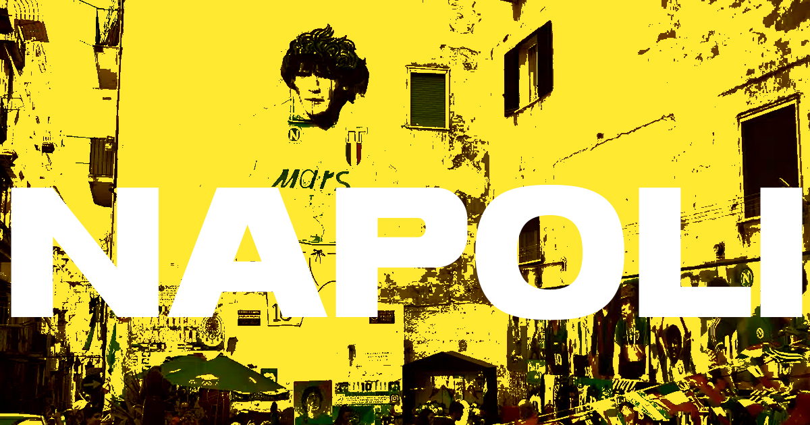